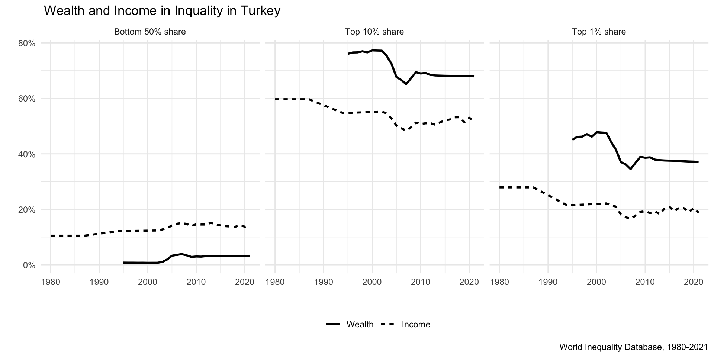
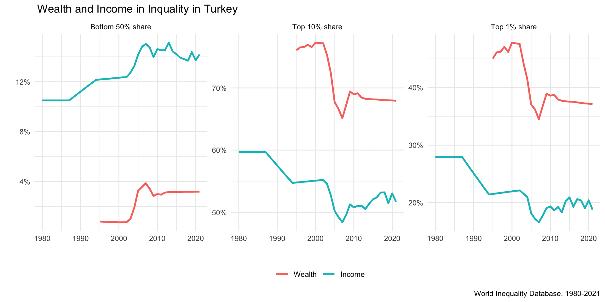

| country | variable | percentile | year | value | age | pop |
|---|---|---|---|---|---|---|
| TR | lifghg999i | p96p97 | 1990 | 5.065 | 999 | i |
| TR | lifghg999i | p96p97 | 1991 | 4.775 | 999 | i |
| TR | lifghg999i | p96p97 | 1992 | 5.442 | 999 | i |
| TR | lifghg999i | p96p97 | 1993 | 5.455 | 999 | i |
| TR | lifghg999i | p96p97 | 1994 | 4.760 | 999 | i |
| TR | lifghg999i | p96p97 | 1995 | 4.840 | 999 | i |
Introduction
< tweet rubenbmathisen 1614707243856936960 >}}
After seeing this tweet on wealth concentration of the top 1%, I decided to play with the data on Turkey from World Inequality Database (WID). Turkey has the second highest percentage of wealth owned by the top 1% in this map. I would like to know how the share of this group (and others) changes over time.
The data are publicly available, and it’s easy to download all indicators at once. The data structure is a little different, though. Here is how it looks:
Now, this is not really a tidy data frame. The column variable has variable codes in rows. Another column, percentile, provides information on percentile codes.1 And, value contains the values of interest.2 As you will see in a second, these percentile codes are required to get information on the shares of percentile groups.
1 The metadata and README files are automatically downloaded with the data and contains useful information about the codes and variables.
2 I think country and year are self-explanatory; age refers to age group and pop refers to population unit. I am not going to use these variables.
Normally, we might want to reshape the data frame to have variables in columns, e.g., using pivot_wider from {dplyr}:
WID_data_TR %>%
pivot_wider(names_from = "variable",
values_from = "value")Here, I won’t do that because I am just going to visualize trends, and long format works as well. In fact, long format make faceting easier in the following plots.
I am going to use two variables (pre-tax national income share3 and net personal wealth share4) and three percentile groups (top 1%, top 10%, and bottom 50%). As I said, we don’t need to reshape the data, we can just filter the values:
3 “pre-tax national income share held by the [percentile] group. Pre-tax national income is the sum of all pre-tax personal income flows accruing to the owners of the production factors, labor and capital, before taking into account the operation of the tax/transfer system, but after taking into account the operation of pension system.”
4 “Net personal wealth share held by the [percentile] group. Net personal wealth is the total value of non-financial and financial assets (housing, land, deposits, bonds, equities, etc.) held by households, minus their debts.”
df <- WID_data_TR %>%
filter(variable %in% c("sptinc992j", "shweal992j")) %>%
filter(percentile %in% c("p0p50", "p90p100", "p99p100")) Now I just want to plot the trends using this subset:
df %>%
ggplot(aes(year, value, color=variable)) +
geom_line(linewidth=1) +
facet_grid(~percentile, labeller=labeller(percentile=c("p0p50" = "Bottom 50% share", "p90p100" = "Top 10% share", "p99p100" = "Top 1% share"))) +
theme_minimal() +
scale_y_continuous(labels = scales::percent) +
scale_color_discrete(labels=c("Wealth", "Income")) +
labs(x =" ", y=" ", title=" Wealth and Income in Inquality in Turkey",
caption = "World Inequality Database, 1980-2021") +
theme(legend.position = "bottom",
legend.title = element_blank())
This plot helps us to see the differences between percentile groups for income and wealth shares. For example, the wealth share of bottom 50% is lower than its income share in percentage points, over the years. Unsurprisingly, the opposite is the case for top 10% and top 1%, and this shows the well-known difference between concentration of wealth and income.
The plots share the y-axis scale, and the range of percentage values makes it hard to see the changes over time. Still, we can say that the wealth and income share of the bottom 50% was relatively stable over the years compared to the top 10% and 1%. In the early 2000s, there is a sharp decline, especially in wealth share for these groups. Income share also indicates more variation for the top 10% and 1% in the last decade, but as I will show you, there is a specific reason for that. Let’s free the y axis to see changes in trends a little more clear.
df %>%
ggplot(aes(year, value, color=variable)) +
geom_line(linewidth=1) +
facet_wrap(~percentile, labeller=labeller(percentile=c("p0p50" = "Bottom 50% share", "p90p100" = "Top 10% share", "p99p100" = "Top 1% share")), scales="free_y") +
theme_minimal() +
scale_y_continuous(labels = scales::percent) +
scale_color_discrete(labels=c("Wealth", "Income")) +
labs(x =" ", y=" ", title=" Wealth and Income in Inquality in Turkey",
caption = "World Inequality Database, 1980-2021") +
theme(legend.position = "bottom",
legend.title = element_blank())
Citation
BibTeX citation:
@online{t.e.g.2023,
author = {T.E.G.},
title = {Playing with {WID} on {Turkey}},
date = {2023-02-02},
url = {https://tegedik.github.io/posts/wid},
langid = {en}
}
For attribution, please cite this work as:
T.E.G. 2023. “Playing with WID on Turkey.” February 2,
2023. https://tegedik.github.io/posts/wid.